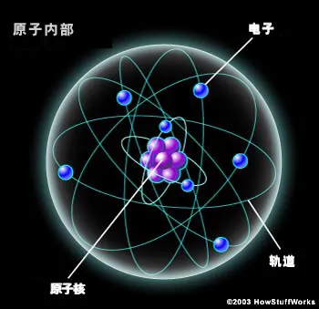
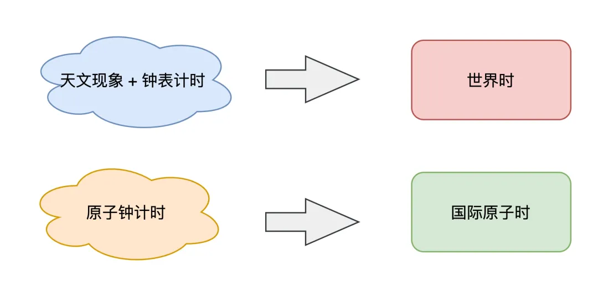
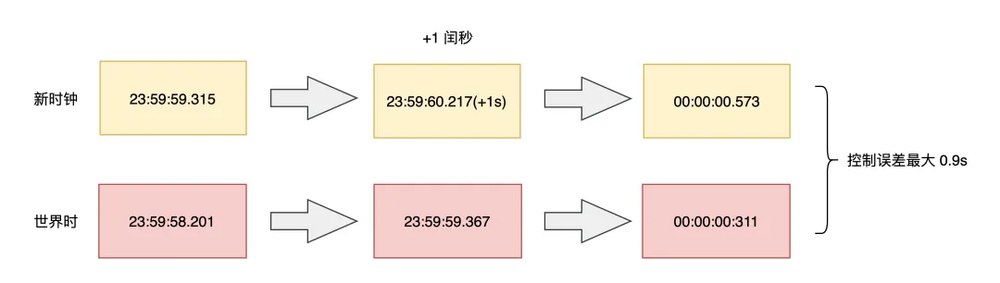
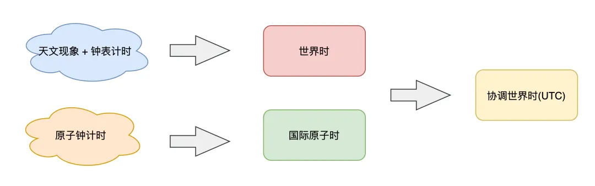

计算机时间到底是怎么来的？程序员必看的时间知识！
转自“码农翻身”
时间总是在不经意间流逝，我们在写代码时，也经常会调用「时间 API」，你有思考过这背后的原理吗？
关于时间的问题还有很多，例如：
- 为什么计算机的时间有时候「走不准」？
- 计算机究竟是怎么「自动校准」时间的？
- 我们经常看到的 UTC 时间，到底是什么？
- 我们在新闻上看到的「北京时间」，真的来自北京吗？
- 这篇文章，我们就来揭秘时间背后的秘密。
这篇文章非常有意思，希望你可以耐心读完。
时间为什么总是走“不准”？
你肯定遇到过这样的场景，家里买了一个钟表，时间一长，就会发现它走得「不准」了。
又或者，一台长时间不使用的电脑，它的时间也会发生偏差。
遇到这些情况，你可能会不以为然。时间不准，那我们就「人工」调准它。
但你有没有停下来想一想，为什么它们的时间会越走越不准呢？
要回答这个问题其实不难，我们只需要搞清楚，它们的时间是怎么来的。
钟表和计算机内部都有一个叫做「晶体振荡器」的东西，给它加上电压，它就会以固定的频率振动。但这个振动频率的「稳定性」，取决于它的制造工艺，以及外界环境的影响。
出于成本的考虑，钟表的制作工艺没那么高，所以它更容易有误差。而电脑制造工艺虽然比较高，但它内部的晶体振荡器也会受到「温度」变化带来的影响，在工作过程中，也会有产生误差。
虽然它们的误差很小，但日积月累下来，误差就越来越明显。
因此，我们现在使用的计算机，都有「自动校准」时间的功能。但是如何校准呢？
如何校准时间？
很简单，只要你把电脑连上了「网络」，你会发现，它会自动与「网络时间」保持同步。
可问题是，这个「网络时间」哪儿来的？
我猜你大脑的第一反应是，每台电脑肯定配置了一个「时间服务器」，之后这台电脑会与服务器定时同步，自动校准。
没错，确实是这样，不光是电脑，我们平时使用的手机、平板、智能手表等电子设备，只要能连接网络，都会自动同步网络时间。
那继续追问，这个「时间服务器」的时间就一定是准的吗？
理论来讲，它应该也是一台计算机，难道它不会遇到我们前面说的问题吗？
此外，这个网络时间究竟是怎么「同步」到我们的电脑上的？
你可能会说，那肯定是通过网络数据包。
问题又来了，网络传输数据也是有「延迟」的，同步服务器时间，不还是存在误差吗？
环环相扣，像一个俄罗斯套娃，很难解释清楚。
要想彻底搞清楚这些问题，就要深入到时间的「源头」来寻找答案。
时间是怎么来的？
时间是一个非常抽象的概念，多少年来，吸引着无数科学家、物理学家、甚至哲学家花费毕生精力去解释时间的本质是什么，从宇宙大爆炸到时空相对论，从黑洞到量子力学，都能看到关于时间这个问题的身影。
这里我们不探讨高深莫测的学术知识，只把目光放聚焦在计算机这个很小的范畴内。但要想清楚解释这个问题，也并非想的那么简单。
我们从最简单的开始说起。
想要知道时间是怎么被定义的，首先要知道「天」是怎么来的？
答案是：观察太阳。
由于地球的「自转」，人们可以看到日出日落，人们日出而作，日落而息，所以就把这一周期现象定义为「天」。
地球除了自转，还在围绕太阳公转，所以公转一周就被定义为一「年」。
从这些现象就能看出来，很早之前的人们，是以「天文现象」来确定时间的。
再后来，人们为了把时间定义得更「精确」，就把一天平均划分为 24 等份，这就是「时」。
同样地，把 1 小时划分 60「分钟」，1 分钟划分为 60「秒」。
这样，时间的基本单位「秒」就被定义出来了。
所以，秒与天的关系就是这样的：
1 秒 = 1 / 24 * 60 * 60 = 1 / 86400 天。
这些定义，都与「地球自转」和「太阳」息息相关。
但是，后来人们发现，地球的公转轨道并不是一个正圆，而是一个「椭圆」，也就是说公转速度是「不均匀」的，这意味着什么呢？
这意味着每天的时间不是等长的，那根据天推算出的秒，自然也不是「等长」的。
很明显，这里的计算存在误差。这怎么办？
聪明的人们就想到，把一年内所有天的时长加起来，然后求「平均」，得到相对固定的「天」，然后再计算得出「相对平均」的秒，这样就减小了误差。
确定了天文规律，人们开始制造「钟表」，把时间表示出来。
从摆钟到机械钟，再到现代广泛使用的石英钟，钟表的制作工艺越来越高，时间精度也越来越高，现代石英钟每天的计时误差只有「千分之一秒」。
所以，在 1927 年，人们以基于「天文现象」+「钟表计时」，确立了第一套时间标准：世界时（Universal Time，简称 UT）。
但是，随着科技的发展，人类对太阳的观测越来越精准，有意思的事情发生了。
人们发现，地球每天的自转速度也「不是匀速」的，地球的自转受到潮汐、地壳运动、冰川融化、地震等自然现象的影响，越来越慢！
这会导致什么问题呢？
这会导致之前规定的，每年平均下来一天的时间，现在来看，也是不一样长的。
例如，第 1 年算出来平均一天的时间是 23.9997 小时，第 2 年可能是 23.998 小时，第 3 年可能是 23.999 小时…
那按照 1 秒 = 1 / 86400 天的定义，每一年的「秒」，也是不一样长的。
这就比较尴尬了，人们以地球自转为依据，定义出来的时间，还是不准！
你可能会想，时间有误差会有什么问题吗？人们依赖不准确的天文现象，不也生活了几个世纪么？
确实，对于人们的基本生活影响其实并不大。但随着人类活动的发展，人们对于高精度的时间场景开始变得越来越多。
例如，体育赛事中百分之一秒的差距就能决定胜负，炮弹的发射要精确在千分之一秒内发生，雷达技术甚至需要精确到百万分之一秒…
尤其是卫星发射、火箭试验等航天领域，对高精度的时间系统也提出了越来越高的要求！
怎么办？怎么彻底解决时间不准的问题？
聪明的科学家们开始思考，既然观测天文现象无法解决这个问题，那在微观层面能否找到比较好的解决方案吗？
这时，他们开始把目光投向了「微观世界」。
一秒到底有多长？
让我们梳理一下我们的需求。
一直以来，我们对于「秒」的定义需求，从本质上讲，就是想要一个「完全稳定」的周期，也就是说，期望每一秒都是固定「等长」的。
而以天文观测、地球自转为基础的时间测量，做不到这一点。
那在微观世界层面，是否存在一种元素，它的运动周期是「高度稳定」，不受外界环境影响的呢？
科学家们沿着这个思路开始探索…
好，现在让我们把视角下放，来到原子世界。
一个原子虽然很小，但它内部却是一个很复杂的世界。
每个原子都有一个原子核，核外分层排布着高速运转的电子，当原子受电磁辐射时，它的轨道电子可以从一个位置「跳」到另一个位置，物理学上称此为「跃迁」。
人们发现，原子内的电子发生跃迁时，原子会吸收或放出一定能量的「电磁波」，这类电磁波就是一种「周期运动」，我们也可以把它看成原子内部的「振荡」。

基于这个原理，科学家们开始不断地试验、研究，尝试寻找一种运动「周期短、高度稳定」的原子。
终于，科学家们发现确实存在这样一种原子：铯原子，它内部的振荡周期比其它原子都要更短、更稳定，而且，这个过程基本不受环境因素的干扰。
经过层层试验，科学家们认为这是目前人类在地球上可测量到的，运动周期最短、周期最稳定的元素！
之后，科学家们就以之前定义的「秒」为基础，去测量一秒内这个铯原子内部电子周期运动的「次数」，测量出来的结果为 9192631770 次（91 亿+次）。
基于此，科学家们决定「抛弃」原来基于天文测量的秒，重新定义「秒」的时长，就是这个高度稳定的运动周期。
因此，在 1967 年，国际度量衡大会决定采用，以铯原子跃迁 9192631770 个周期，所持续的时间长度定义为 1 秒！
注：这个测量原理和测量过程比较复杂，这里把这些物理细节简化了。不用太过纠结这个数值是怎么测量出来的，你只需要理解，这个微观原子内部的振荡周期是非常稳定的，它比之前根据天文现象测量出来的秒，要精确多得多。
而基于这个铯原子振荡制造出来的时钟，我们就把它称之为「原子钟」。
有了原子钟，这就意味着，原子钟输出的每一秒，都是绝对「等长」的，非常稳定，这样一来，就实现了「精准计时」！
这个精确程度可以达到多高呢？
2000 万年不差 1 秒！可见其精准程度之高。
科研技术还在发展，精密设备和测量能力也越来越高，最新的原子钟甚至可以达到 1 亿年不差 1 秒！
有了原子钟，人们基于原子钟又确立了一套新的时间标准，叫做「国际原子时」（International Atomic Time，简称 TAI）。
科学家们规定，从 1958-01-01 00:00:00 起，用原子时开始计时，它每走的一秒，都是非常精确的一秒（固定等长），实打实的一秒，完全稳定的一秒。
这个方案非常棒，至此终于解决了秒不固定长的问题。
那有了这个国际原子时，可否让它直接取代掉前面说的——以天文现象计时的「世界时」呢？
答案是否定的，这个问题远比想象的复杂得多，这是为什么呢？
世界标准时间是怎么来的？
现在，科学家制定出了两套时间标准：
- 世界时：基于天文现象 + 钟表计时，永远与地球自转时间相匹配
- 国际原子时：基于原子钟计时，每一秒的周期完全等长且固定

假设我们以国际原子时为时间标准，那会发生什么现象呢？
因为原子时非常稳定，但世界时随着地球自转变慢，会越来越慢，就会发生这种现象：
- 原子时走得快，世界时走得慢，时间越久，两者差距越来越大
- 日复一日，几百年后，世界时的正午 12 点是太阳高照的时刻，而原子时可能已经走到了下午 2 点了
- 几千年后，太阳高照的时刻，原子时可能已经走到了晚上 8 点！
晚上 8 点是太阳高照的时刻，你能想象这种情况吗？
这太颠覆我们的生活认知了…
基于天文测算的世界时，已经指导我们人类生活了上千年，人类早已习惯了这种时间标准，直接被原子时取代，肯定是不能接受的。
但我们又需要原子时这种高度稳定的计时标准，来发展科学研究，两者发生矛盾，这怎么办？
科学家们又开始思考，终于想到一个互相兼容的解决方案。
既然两套时间标准都很重要，那两者都保留，不会互相取代。
我们可以再建立一套「新的时间标准」，这套时间以「原子时为基准」，开始计时，走的每一秒都是稳定、精确的。
同时，为了兼顾基于天文测量的世界时，人类会「持续观测」世界时与这个新时钟的差距。
如果发现两者相差过大时，我们就「人为」地调整一下这个时钟（加一秒或减一秒），让两者相差不超过 0.9 秒。
例如，这个时钟本身比世界时走得快，经过一段时间后，如果发现两者相差越来越大，那就给这个时钟「加一秒」，让这个时钟在 23:59:59 的下一秒变为 23:59:60 秒，让它与世界时差距控制在 0.9 秒以内，这个操作过程，相当于让快的时钟稍微「等」一下走得慢的世界时。
而加的这一秒，科学家把它定义为「闰秒」。

是不是挺有意思？听说过闰年，没想到还有闰秒！
当然，当地球自转速度变快时，这里也有可能是减一秒，即从 23:59:58 直接跳到 00:00:00。但这种情况比较少，大部分情况下，地球自转速度是越来越慢的。
这么做的好处在于，这个时钟的每一秒的计时依旧是精确的，而且还兼顾了日常生活使用的世界时，一举两得！
由于这个时钟是基于原子时 + 世界时「协调」得出的，所以科学家们把它定义为协调世界时（Coordinated Universal Time，简称 UTC）。

看到了么？我们在开发时经常看到的 UTC，原来是这样来的！
有了这个研究成果，有技术能力的国家都纷纷制造自己的原子钟，然后计算协调世界时。
同时，为了进一步降低原子钟的测量误差，每个国家会在每个月，统一上报自己计算的世界协调时到一个权威机构，然后这个权威机构会根据各国实验室的精度，进行加权计算，算出「最终」的协调世界时。
之后，再把这个最终的时间下发到各个国家，让各个国家进行「对表」校准，保证全世界的时间误差在 100 纳秒以内。
至此，科学家们建立的这套时间标准，就是我们现在沿用至今的「标 准 时 间」！
值得一提的是，配合计算世界协调时的国家，也有中国，这个实验室就是「中国科学院国家授时中心」，它位于中国的陕西省渭南市蒲城县，持续维护中国的标准时间。
为什么国家授时中心会设立在陕西省？因为陕西省的地理位置处于中国的中部，从这个位置向各地广播时间时，对全国每个地区距离都是相对平均的。
之后，中国会在自己算出的世界协调时的基础上，再加 8 个小时（中国在东八区），最终得出来的时间，就是「北 京 时 间」！
没错，就是我们经常在新闻播报上听到的，北京时间。
是不是挺有意思？北京时间并不是在北京产生的，而是在陕西省，并与参与世界时间的制定和校准。
至此，全新的世界标准时间确立了，这套时间标准于 1972 年正式确定，一致沿用至今。
有了标准时间，那么接下来的问题就是，这个标准时间到底是如何同步到我们的电脑、手机、电子设备上的呢？
这就是下面要讲的「授时」。
计算机如何同步时间？
到现在我们知道，世界标准时间和北京时间是怎么来的，但北京时间的产生是在陕西省，难道校准一次时间需要跑到这里吗？
很显然是不需要的。
位于陕西省的中国科学院国家授时中心，产生北京时间后，会通过一系列方式，把这个时间广播出去，这个过程，就叫做「授时」。
具体怎么做呢？
国家授时中心提供很多授时方式，例如无线电波、网络、电话，都可以把时间广播出去。
通常来说，无线电波的传播速度更快、传播误差小，所以授时中心会通过这种方式，把时间发送给全国各地的「时间服务器」。
时间服务器有了准确的时间后，再通过其它方式（例如网络）广播到下一层的终端用户使用。
经过这么一番研究，到这里我们就可以解释文章开头的问题了。
一个时间服务器，原来是通过国家授时中心同步时间，然后再给其它终端提供时间同步服务的。
那我们的计算机如何和它保持同步呢？
你可能会想，最简单的方式就是，客户端向服务端「请求获取」标准时间，服务端响应时间数据，客户端修改自己的「本机时间」即可。
但事情没你想的这么简单。
因为数据在网络传输过程中，也是需要时间的，这个时间也会影响到时间的准确性。
这怎么办呢？
于是人们想了一种方案，当计算机在做时间校准时，也需要把网络延迟计算进去，最后「修正」这个同步过来的时间，降低误差。
现在，已经有个软件已经把这一切都做好了，如果你了解一些运维相关的工作，就会知道，我们部署应用程序的服务器上，都会启动一个「自动校准」时间的服务，这个服务就是 NTP（Network Time Protocol），它可以保证每台机器的时间与时间服务器保持同步。
那 NTP 是怎么同步服务器时间的呢？
这里就涉及到 2 个重点：
1 NTP 如何同步时间？
2 同步时间时，对正在运行的程序有没有影响？
先来看第一个问题：NTP 如何同步时间？
简单来讲，它是通过在网络报文上打「时间戳」的方式，然后配合计算网络延迟，从而修正本机的时间。
根据图示可以计算出网络「传输延迟」，以及客户端与服务端的「时间差」：
网络延时 = (t4 - t1) - (t3 - t2)
时间差 = t2 - t1 - 网络延时 / 2 = ((t2 - t1) + (t3 - t4)) / 2
这个计算过程假设网络来回路径是对称的，并且时延相同。
这样一来，客户端就可以「校准」自己的本机时间了，与服务端保持同步，这个时间误差在广域网下是 10ms - 500ms，在局域网下通常可以小于 1ms。
再来看第二个问题：同步时间时，对正在运行的程序有没有影响？
例如，我们很多时候写的程序代码是这样的：
t1 = time.now() // 时间发生校准 t2 = time.now()
// t2比t1小怎么办？ elapsed = t2 - t1 t2 的时间真的会比 t1 小吗？
这里就牵涉出 2 个概念：墙上时钟、单调时钟，它们之间有什么区别呢？
墙上时钟：通常就是指前面讲到的世界协调时 UTC，校准时间后，可能发生回拨 单调时钟：计算机自启动以后经历的纳秒数，不会回拨 一般我们写的代码，像上面程序调用的「时间 API」，通常获取的时间是墙上时钟，所以，如果时间发生校准，就可能会发生「时光倒流」的情况。
这必然对程序产生很大的影响，怎么解决这个问题呢？
幸运的是，NTP 在校准时间时，提供了 2 种方式：
ntpdate：一切以服务端时间为准，「强制修改」本机时间 ntpd：采用「润物细无声」的方式修改本机时间，把时间差均摊到每次小的调整上 也就是说，ntpd 当接收到需要「回拨」的时间时，会让本机时间走得「慢」一点，小步调整，逐渐与服务端的时钟「对齐」，这样一来，本机时间依旧是递增的，避免发生「倒流」。
当我们在配置 ntp 服务时，需要格外注意这种情况。另外，在编写程序时，也要注意调用的时间 API 获取的是哪个时间，避免业务逻辑发生异常。
至此，我们从看似简单的时间问题，一步步深挖到时间的定义，再到时间是如何同步到计算机和终端设备的，怎么样，有没有解答了你心中的很多疑惑？
总结 好了，总结一下。
这篇文章我们讲了非常多的概念，这里我们再重新梳理一遍。
1、人类的早期生活，依靠观测「天文现象」来测量时间，基于地球自转规律，定义了一套时间标准：「世界时」。
2、后来人们发现，由于地球公转轨道是一个椭圆，并且地球自转还受到地球内部的影响，自转速度越来越慢，人们发现世界时测算出的时间「不准」。
3、科学家们开始从「微观世界」寻找更稳定的周期运动，最终确定以「铯原子」的振动频率为基准，制造出了「原子钟」，确立了「世界原子时」，并重新定义了「秒」长度，时长高度精确。
4、但由于人类社会活动已高度依赖「世界时」，所以科学家们基于「原子时」和「世界时」，最终确立出新的时间标准：「世界协调时」，把它定义成了全球的时间标准，至此，世界标准时间诞生。
5、中国基于「世界协调时」再加上 8 小时时区之差，确立了「北京时间」，并广播给整个中国大地使用。
6、「国家授时中心」把北京时间广播给全国的「时间服务器」，我们生活中使用的时间，例如计算机，就是通过时间服务器自动同步校准的。
7、计算机通过 NTP 完成和时间服务器的「自动校准」，我们的应用程序基于此，才得以获取到准确的时间。
8、NTP 服务应该采用润物细无声的方式同步时间，避免时间发生「倒流」。
后记 这篇文章是我有史以来，最难写的一篇，因为其中有大量科普类知识，涉及范围之广远超我的想象。
在写这篇文章时，我至少阅读了 30 篇以上的资料，很多时候会因为一个很小的细节，又深挖出更多相关的领域的知识，让我目不暇接。
例如，铯原子的振动频率是怎么测量的？为什么能测量得这么精确？各个国家的原子钟为什么会有差异？计算机是如何处理闰秒的？时区是怎么来的？本初子午线是什么？…
很多细节我其实并没有展开来讲，我已尽力避开讲那些晦涩难懂的物理知识，只保留了重要的理论概念，希望你理解了这其中的原理。如果有些细节你没有读懂，可以先尝试多读几遍，也可以与我进一步交流。
同时，在查阅资料过程中，真切地感叹人类研究成果之伟大，能把时间的误差，缩小到几亿年的精度，敬佩之情无以言表。
我们在写代码时，看似调用了一个简单的时间 API，可曾想过，背后却是人类多少年来的智慧结晶。希望这篇文章能解答你对时间的种种疑惑。